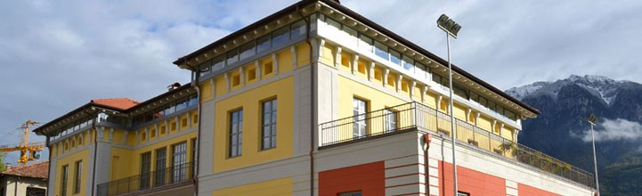
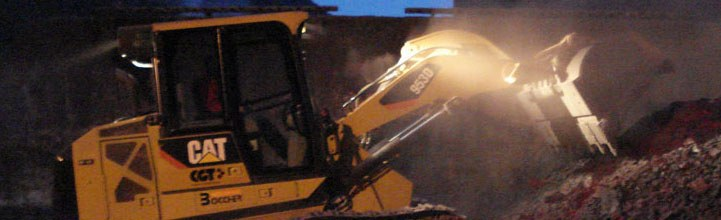
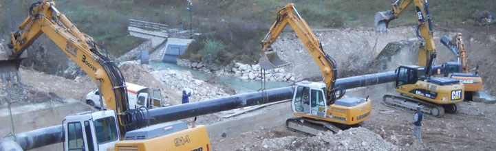
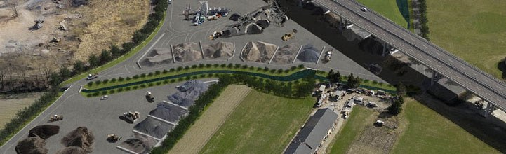
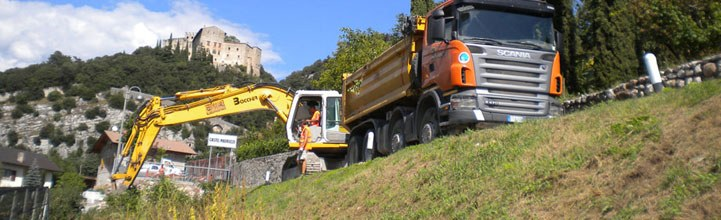
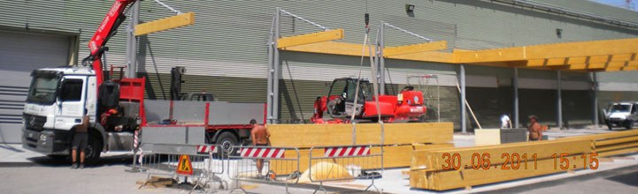
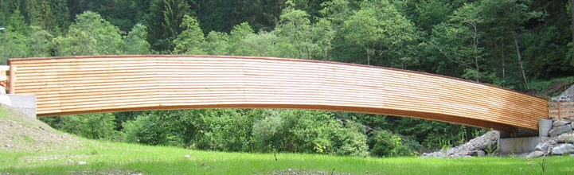

Edilizia civile e industriale
Costruzioni e ristrutturazioni di edifici pubblici e privati, magazzini e capannoni.
Vedi i lavoriCostruzioni civili e industriali, opere stradali, acquedotti e fognature, movimento terra e bonifiche. E a Località Visle il centro dove i rifiuti inerti dei cantieri tornano aggregati e asfalto a freddo.


Costruzioni e ristrutturazioni di edifici pubblici e privati, magazzini e capannoni.
Vedi i lavori
Opere stradali, acquedotti, fognature, irrigazione e bonifiche, soprattutto su commessa pubblica, con i nostri escavatori, pale, autocarri e rulli.
Vedi i lavori
Il centro di Località Visle ritira i rifiuti inerti da costruzione e demolizione e li trasforma in aggregati, calcestruzzi e asfalto a freddo.
Il centro inertiLa movimentazione delle scorie dell'acciaieria di Borgo Valsugana, dentro lo stabilimento e fino ai luoghi autorizzati.



Via Puisle 17, Zona Artigianale
38051 Borgo Valsugana (TN)
Telefono 0461 752742
Email info@boccher.it